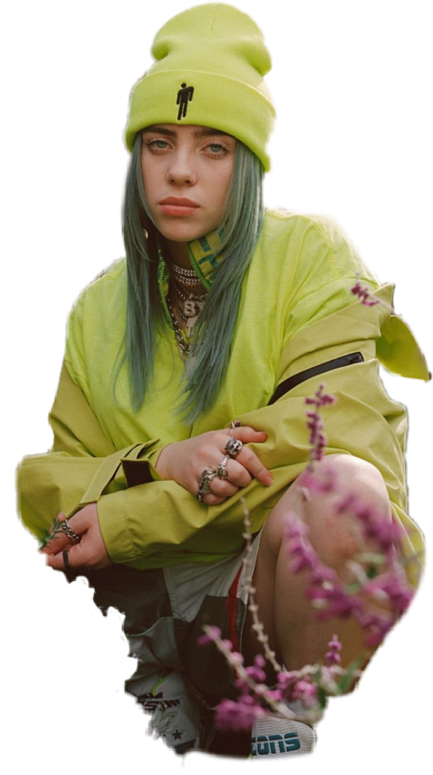

BILLIE EILISH
Biografía

Billie Eilish Pirate Baird O'Connell (Los Ángeles, California; 18 de diciembre de 2001) es una cantante y compositora estadounidense.
Adquirió fama como artista cuando tenía 13 años, a raíz del sencillo «Ocean Eyes» que se publicó en 2015 en SoundCloud y volvió a lanzarse con un vídeo musical en YouTube en 2016, a la edad de 14 años, lo que la convirtió en un fenómeno viral.
En 2017, publicó su EP Don't Smile at Me, producido por su hermano Finneas O'Connell.
Su primer álbum de estudio, When We All Fall Asleep, Where Do We Go?, se publicó el 29 de marzo de 2019. Según la RIAA, a lo largo de su carrera ha logrado dos canciones con disco de platino: «Ocean Eyes» y «Lovely», esta última con Khalid, y siete sencillos con disco de oro.
El álbum se llevó el Grammy al álbum del año y al mejor álbum de pop vocal en los premios de 2020. Asimismo, Eilish ganó el premio a la mejor artista novel y su éxito «Bad Guy» ganó la canción del año y grabación del año.